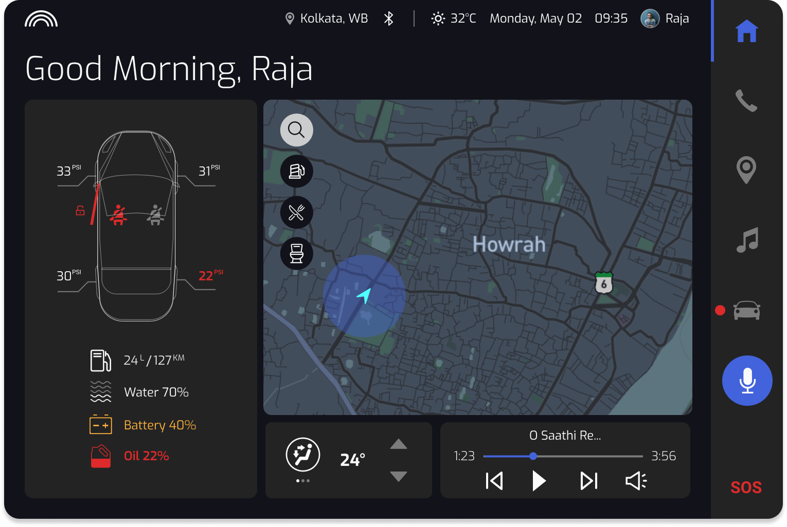
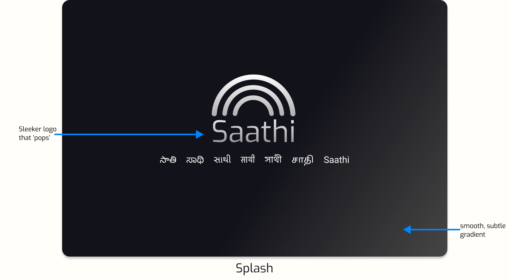
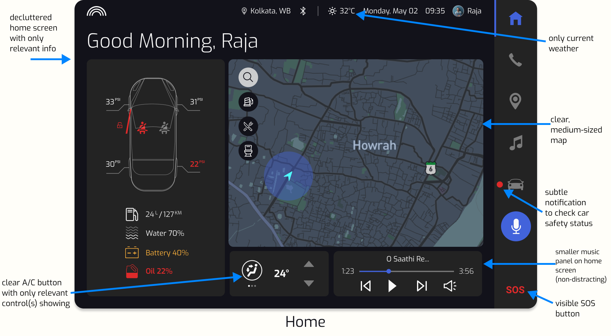
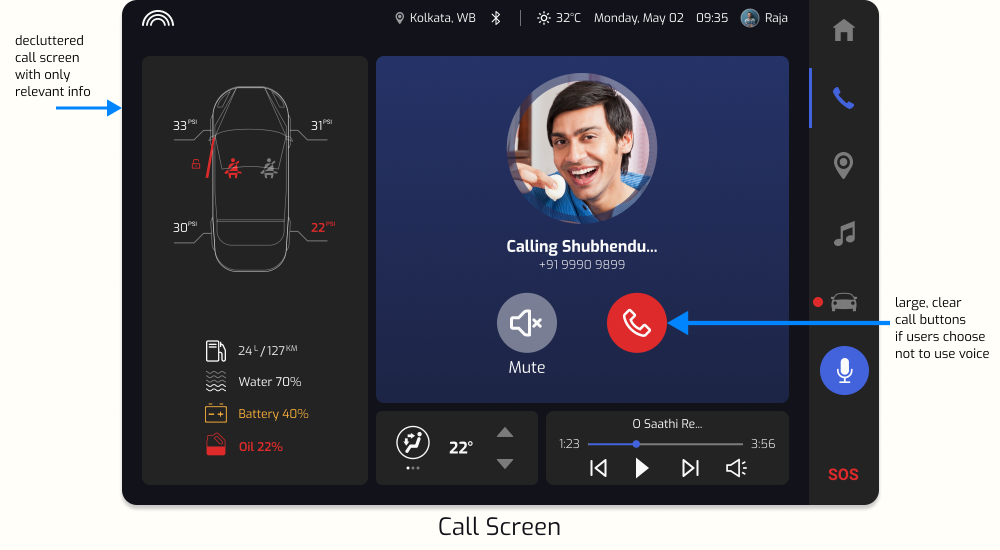
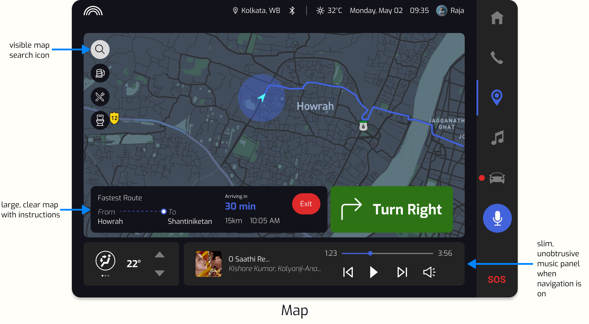
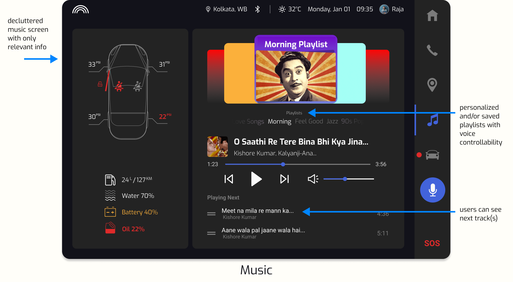
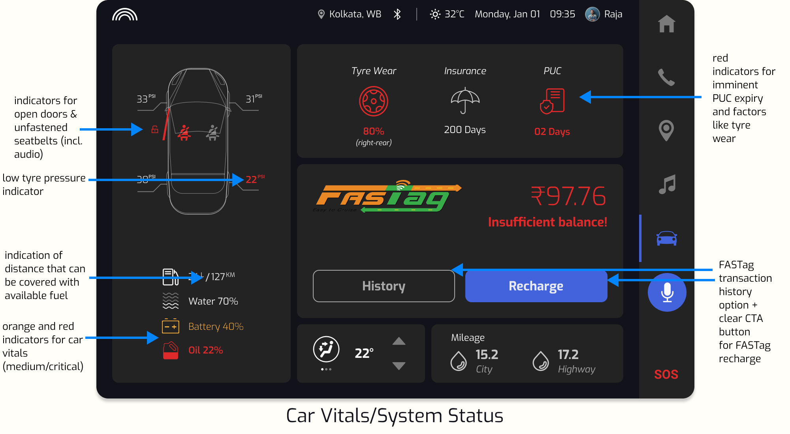
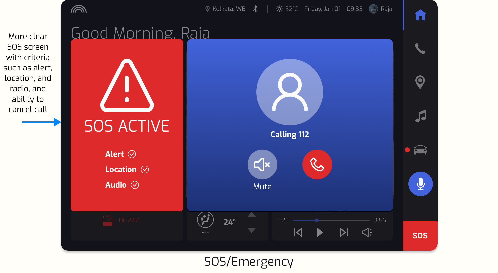

Saathi: Voice-controlled Car Dashboard
Making the Indian driving experience easier, safer, and more comfortable.
Overview
I undertook this project in a team of seven during the Monsoon Course on HCI 2021 at the prestigious IIT Bombay.
Product: A voice-controlled dashboard in cars for the Indian market. I came up with the name “Saathi” for this product, which means “companion” in Hindi, the most widely-used language in India.
Problem: Many dashboards in cars available in India are unintuitive and distracting, whether they are touchscreen-based or feature analog buttons/knobs. These can be dangerous to use while driving (they require a considerable amount of cognitive load), especially on busy roads. Even where users use voice technology to assist them while driving—such as with their smartphone maps—these technologies seldom recognize South Asian accents, dialects, and languages properly. Few dashboards in non-luxury cars are “smart” or personalized to their users.
Goal: Design a voice-controlled car dashboard that addresses the pain points and needs of users who drive regularly in India.
Client: IIT Bombay.
My Role: Product designer and project manager.
- Facilitated two user interviews.
- Crafted revised design brief.
- Set product, business, and UX goals.
- Created personas and wrote scenarios.
- Co-created user flow.
- Crafted wireframes and prototypes for key screens.
- Spearheaded Wizard-of-Oz usability testing.
Project Duration: Two-week intensive sprint (summer 2021)
Contextual Inquiry: User Interviews
To better understand the scope and problem area(s), my team and I interviewed 10 participants living in six cities across the subcontinent. Each user was recruited because they regularly drive a car that either they or a family member own. The interviews were contextual—while they were conducted, users sat inside their cars and showed us their dashboards.
We asked participants questions pertaining to their driving habits, current dashboard usage, what they wished their dashboard could offer, issues they faced while driving in India, and more.
Affinity Mapping
After compiling our interview interpretations, we created an affinity map to organize the vast amount of data into themes or patterns. Using a bottom-up approach, we included and coded notes from the user interviews, saturating the board. We recognized patterns and grouped our map into relevant clusters. Some clusters were further grouped under broader summary headings.
Here are some key clusters from the affinity map:
Through affinity mapping, we saw our data come to life and better understand the user needs to focus on while designing the dashboard.
Important Research Findings
After evaluating the interview interpretations and the affinity diagram, I summarized some of our key research findings:
Revised Design Brief
Based on our research and affinity diagram, I revised our design brief so that my team and I could refocus our design:
Design a personalized, voice-controlled dashboard in Indie Motors' cars for the Indian market. The dashboard will serve as a companion-like solution to leverage key features within the car, including navigation/GPS; safety, emergency and road trip assistance; internal hardware, and more, enhancing and simplifying the user's overall in-car experience
Note: Indie Motors is a fictional automobile manufacturer that we created for this project.
Based on our findings, we honed in on a target audience: regular drivers in India, aged 18 to 50, with a budget of ₹8 to 20 lakh (approximately $13,500 to $40,000 CAD).
Goal Setting
I set goals to guide my team's focus to achieve specific targets.
Product goals
After careful consideration of all our findings so far, I succinctly summed up our primary and secondary goals for our product, Saathi:
Primary Goal: Design a voice-enabled dashboard that makes the driving experience in India easier. safer, and more comfortable.
Secondary Goal: Design the dashboard to work like a companion for users, through personalization and customizability.
Business goals
Our business goals needed to be aligned with the product we were designing. To do this, we came up with a fictional automobile manufacturer called Indie Motors, who is creating the Saathi dashboard in its mid to mid-premium range of cars.
- Lead the market; drive revenue growth.
- Potentially sell the technology depending on product success.
- Product version: 1.0 (minimum viable product)
- Industry domain: automotive/technology
User experience goals
We used a user experience goal setting form, which is part of a Usability Goal Setting Tool (UGT) created by HCI practitioners. This helped us prioritize the goals for the user as they interact with our product, Saathi. Here is a portion of the form that I filled out which focuses on learnability:
Personas
We created three personas: Raja, Dinesh, and Preity. Each persona represents a different set of users for our product, based on data from our user interviews. As such, each persona has different pain points, needs, goals, and behaviors.
Scenarios
As a logical next step, we created user scenarios for our personas to understand how users might interact with Saathi to achieve their goals. With input from my teammates, I wrote the following scenarios (illustrations by Ujjwal Mahajan).
Scenario 1:Raja drives to work every day but is frustrated by his cluttered dashboard.

How our dashboard makes Raja’s driving experience personalized, simple, and non-distracting:

Early Concepts
To get the creative juices flowing, we sketched out some concepts for Saathi without limiting ourselves to any guidelines or criteria.
We kept some good ideas (such as car status and safety features, and facial recognition log-in), and discarded others as they went against our goals (such as a curved touchscreen with entertainment apps).
Usability Testing.
We needed to evaluate our designs through usability testing on real potential users. For this, we re-recruited three participants we interviewed in the early stages of the project. These users closely matched the criteria in our personas. I observed and took notes for the first two tests and served as the moderator for the last one.
Before the study, I provided our users with two realistic use cases of Saathi—i.e., "scripts"—that I wrote, so that they could get a solid idea of how our product might be used in real-world scenarios.
Due to the voice-based nature of our prototype, I led a Wizard-of-Oz style usability test, with one of our team members acting as Saathi. Users would interact with him and he responded in Saathi-like fashion via voice modulation software. This ensured that there was little to no lag and gave Saathi the companion-like feel that we wanted to incorporate.
Users could communicate with Saathi by saying things like:
- “Hi Saathi, let’s go on a road trip.”
- “Hi Saathi, show me the fastest route to work.”
- “Hi Saathi, SOS. This is an emergency.”
Saathi responded to the user verbally and the screens changed accordingly (with our teammate controlling the prototype interaction behind the scenes).
I created a key performance indicator (KPI) tool to evaluate our design. Participants were requested to answer these questions immediately after the usability test. Each question was crafted so that users could help us refine the design of Saathi according to our revised design brief.
Here are some quotes from users about their experience while testing the product:
Iteration & Final Prototype
Here are some mockups from the final prototype. We implemented many of the changes that we decided upon after usability testing and evaluating our design—from a simple ‘dark mode’ theme to a decluttered home screen.
      Reflection & Takeaways
- Working in a multidisciplinary team is rewarding.
I collaborated on this project with people from different backgrounds and skill-sets. Some were already working in UX or UX-related fields, while others weren’t. Still, we successfully leveraged everyone’s skills, from illustration to project management. My experience in marketing proved useful as I wrote the content, shaped many of the business aspects of Saathi, and led presentations.
- Designers' best guesses are not good enough.
I was floored by the excellent and surprising insights our users had to offer, and we iterated our designs accordingly. Many assumptions my team made were debunked along the way. After all, users are not designers.
- The design process is often ugly.
On the road to the prototype, we had many raw sketches and strange ideas crop up, not to mention skirmishes within the team due to differing opinions. I learned to appreciate these aspects of the design process. These ‘ugly’ or seemingly undesirable parts of collaborative design helped us consider more possibilities and create an even better final product.
This was a challenging yet rewarding project to work on. Thank you for checking it out. I welcome feedback.
Back to top